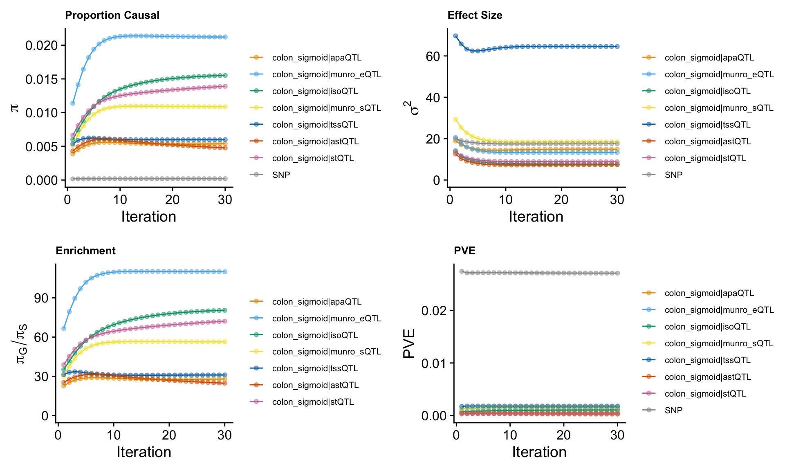
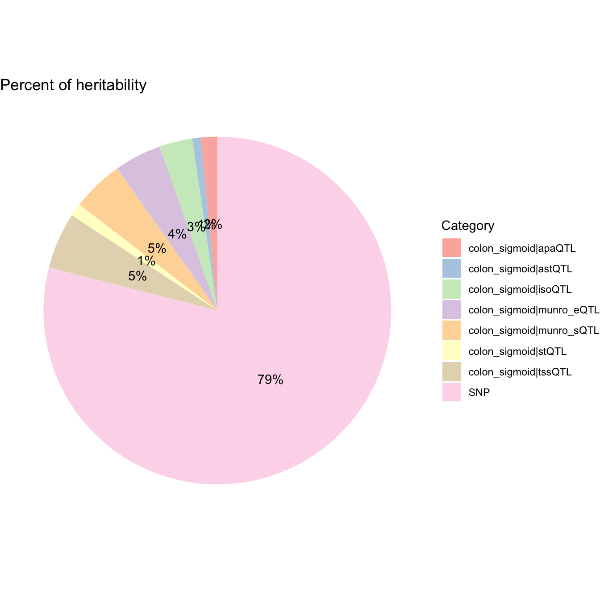
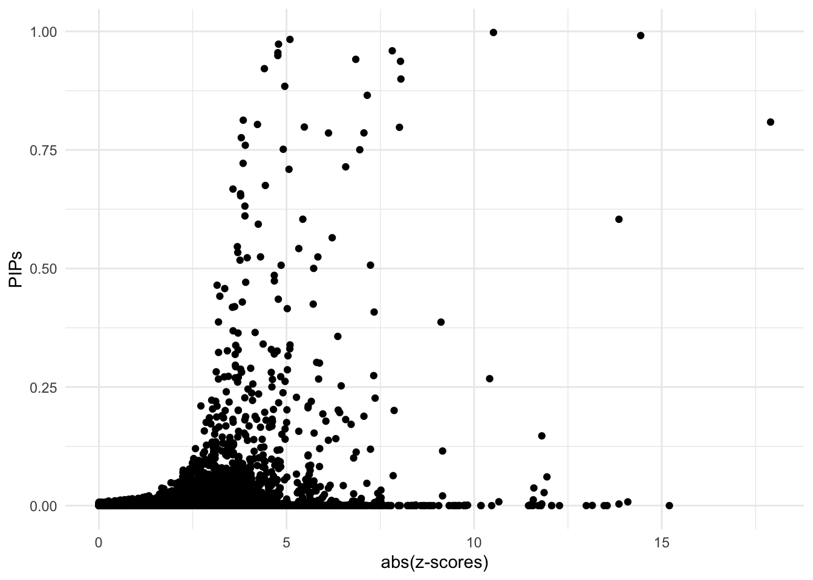
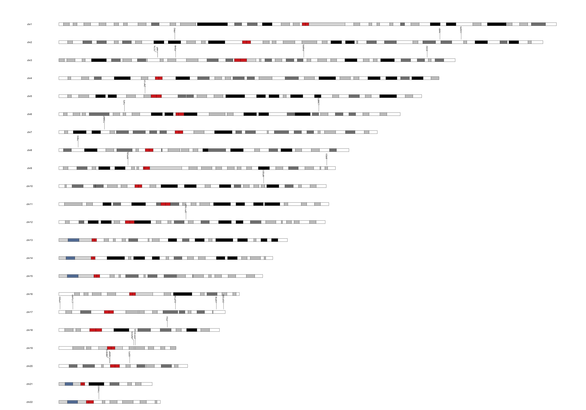
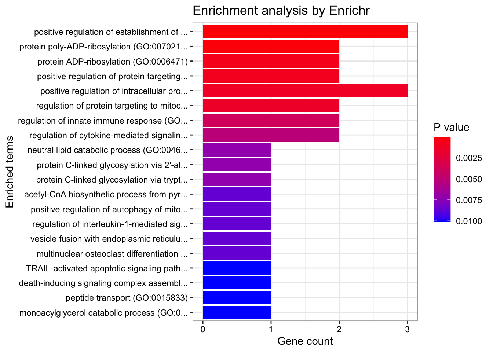
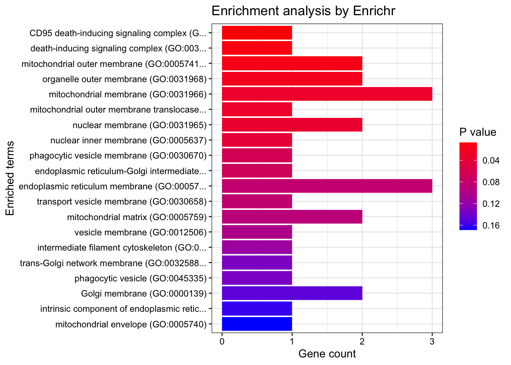

Prostate Cancer ~ Munro 7 colon sigmoid QTLs
Nina Yifan Yang
2024-11-09
Last updated: 2024-11-09
Checks: 7 0
Knit directory: Multigroup_cTWAS/
This reproducible R Markdown analysis was created with workflowr (version 1.7.1). The Checks tab describes the reproducibility checks that were applied when the results were created. The Past versions tab lists the development history.
Great! Since the R Markdown file has been committed to the Git repository, you know the exact version of the code that produced these results.
Great job! The global environment was empty. Objects defined in the global environment can affect the analysis in your R Markdown file in unknown ways. For reproduciblity it’s best to always run the code in an empty environment.
The command set.seed(20241004) was run prior to running
the code in the R Markdown file. Setting a seed ensures that any results
that rely on randomness, e.g. subsampling or permutations, are
reproducible.
Great job! Recording the operating system, R version, and package versions is critical for reproducibility.
Nice! There were no cached chunks for this analysis, so you can be confident that you successfully produced the results during this run.
Great job! Using relative paths to the files within your workflowr project makes it easier to run your code on other machines.
Great! You are using Git for version control. Tracking code development and connecting the code version to the results is critical for reproducibility.
The results in this page were generated with repository version 85bac39. See the Past versions tab to see a history of the changes made to the R Markdown and HTML files.
Note that you need to be careful to ensure that all relevant files for
the analysis have been committed to Git prior to generating the results
(you can use wflow_publish or
wflow_git_commit). workflowr only checks the R Markdown
file, but you know if there are other scripts or data files that it
depends on. Below is the status of the Git repository when the results
were generated:
Ignored files:
Ignored: .DS_Store
Ignored: .Rhistory
Ignored: analysis/.DS_Store
Ignored: analysis/.Rhistory
Note that any generated files, e.g. HTML, png, CSS, etc., are not included in this status report because it is ok for generated content to have uncommitted changes.
These are the previous versions of the repository in which changes were
made to the R Markdown
(analysis/cTWAS_LD_european_munro_colon_sigmoid7_output.Rmd)
and HTML
(docs/cTWAS_LD_european_munro_colon_sigmoid7_output.html)
files. If you’ve configured a remote Git repository (see
?wflow_git_remote), click on the hyperlinks in the table
below to view the files as they were in that past version.
| File | Version | Author | Date | Message |
|---|---|---|---|---|
| Rmd | 85bac39 | yy896 | 2024-11-09 | UPDATED RESULTS |
Here presenting a cTWAS results report based on real data analysis. The analyzed trait is prostate cancer, the prediction models are Munro et.al multimodal 7 QTLs.
Analysis Settings
Input Data
- GWAS Z-scores
The summary statistics for prostate cancer are downloaded from https://www.ebi.ac.uk/gwas/downloads/summary-statistics, using dataset ID: GCST90274714.
The sample size is
[1] "gwas_n = 726828"- Prediction models
The prediction models used in this analysis are Munro et.al 7 QTLs. Source data: https://www.dropbox.com/scl/fo/c88y8wu8u6beaxar3bs7g/h?rlkey=d2atycui3uyq83igk4hipu8ln&dl=0.
- Reference data
We did include ukb38 whole genome LD reference in the analysis.
Data processing and harmonization
We map the reference SNPs to regions following the instructions from the cTWAS tutorial.
When processing z-scores, we exclude multi-allelic and
strand-ambiguous variants by setting
drop_multiallelic = TRUE and
drop_strand_ambig = TRUE.
The process can be divided into steps below, users can expand the code snippets below to view the exact code used.
- Input and output settings
weight_files <- c("/project2/xinhe/shared_data/multigroup_ctwas/weights/Munro_alt_polyA_PredictDB/apa_Colon_Sigmoid.db",
"/project2/xinhe/shared_data/multigroup_ctwas/weights/Munro_alt_stability_PredictDB/Colon_Sigmoid.db",
"/project2/xinhe/shared_data/multigroup_ctwas/weights/Munro_alt_tss_PredictDB/tss_Colon_Sigmoid.db",
"/project2/xinhe/shared_data/multigroup_ctwas/weights/Munro_expression_PredictDB/expression_Colon_Sigmoid.db",
"/project2/xinhe/shared_data/multigroup_ctwas/weights/Munro_isoform_PredictDB/isoform_Colon_Sigmoid.db",
"/project2/xinhe/shared_data/multigroup_ctwas/weights/Munro_splicing_PredictDB/splicing_Colon_Sigmoid.db",
"/project2/xinhe/shared_data/multigroup_ctwas/weights/Munro_stability_PredictDB/stability_Colon_Sigmoid.db")
z_snp <- vroom::vroom("/project2/xinhe/yifany/GCST90274714.mod.tsv.gz", col_names = TRUE, show_col_types = FALSE)
z_snp$Z <- z_snp$beta / z_snp$standard_error
# gwas_n <- as.numeric(names(sort(table(z_snp$base_pair_location), decreasing = TRUE)[1]))
# cat("gwas_n =", gwas_n, "\n")
gwas_n <- 726828
z_snp <- z_snp[, c("rsid", "other_allele", "effect_allele", "Z")]
colnames(z_snp) <- c("id", "A1", "A2", "z")
region_file <- system.file("extdata/ldetect", "EUR.b38.ldetect.regions.RDS", package = "ctwas")
region_info <- readRDS(region_file)
# output dir
outputdir <- "/project2/xinhe/yifany/multigroup_cTWAS"
dir.create(outputdir, showWarnings=F, recursive=T)
# Number of cores
ncore <- 5- Preprocessing GWAS
### Preprocess SNP_map and LD_map
genome_version <- "b38"
region_file <- system.file("extdata/ldetect", paste0("EUR.", genome_version, ".ldetect.regions.RDS"), package = "ctwas")
region_info <- readRDS(region_file)
LD_dir <- "/project2/mstephens/wcrouse/UKB_LDR_0.1"
LD_filestem <- sprintf("ukb_%s_0.1_chr%s.R_snp.%s_%s", genome_version, region_info$chrom, region_info$start, region_info$stop)
region_metatable <- region_info
region_metatable$LD_file <- file.path(LD_dir, paste0(LD_filestem, ".RDS"))
region_metatable$SNP_file <- file.path(LD_dir, paste0(LD_filestem, ".Rvar"))
res <- create_snp_LD_map(region_metatable)
region_info <- res$region_info
snp_map <- res$snp_map
LD_map <- res$LD_map
z_snp <- preprocess_z_snp(z_snp, snp_map,
drop_multiallelic = TRUE,
drop_strand_ambig = TRUE)- Preprocessing weights
weights_colon_sigmoid_apaQTL <- preprocess_weights(weight_files[1],
region_info,
gwas_snp_ids = z_snp$id,
snp_map = snp_map,
LD_map = LD_map,
type = "apaQTL",
context = "colon_sigmoid",
weight_format = "PredictDB",
drop_strand_ambig = TRUE,
scale_predictdb_weights = TRUE,
load_predictdb_LD = FALSE,
filter_protein_coding_genes = TRUE,
ncore = ncore)
weights_colon_sigmoid_astQTL <- preprocess_weights(weight_files[2],
region_info,
gwas_snp_ids = z_snp$id,
snp_map = snp_map,
LD_map = LD_map,
type = "astQTL",
context = "colon_sigmoid",
weight_format = "PredictDB",
drop_strand_ambig = TRUE,
scale_predictdb_weights = TRUE,
load_predictdb_LD = FALSE,
filter_protein_coding_genes = TRUE,
ncore = ncore)
weights_colon_sigmoid_tssQTL <- preprocess_weights(weight_files[3],
region_info,
gwas_snp_ids = z_snp$id,
snp_map = snp_map,
LD_map = LD_map,
type = "tssQTL",
context = "colon_sigmoid",
weight_format = "PredictDB",
drop_strand_ambig = TRUE,
scale_predictdb_weights = TRUE,
load_predictdb_LD = FALSE,
filter_protein_coding_genes = TRUE,
ncore = ncore)
weights_colon_sigmoid_eQTL <- preprocess_weights(weight_files[4],
region_info,
gwas_snp_ids = z_snp$id,
snp_map = snp_map,
LD_map = LD_map,
type = "munro_eQTL",
context = "colon_sigmoid",
weight_format = "PredictDB",
drop_strand_ambig = TRUE,
scale_predictdb_weights = TRUE,
load_predictdb_LD = FALSE,
filter_protein_coding_genes = TRUE,
ncore = ncore)
weights_colon_sigmoid_isoQTL <- preprocess_weights(weight_files[5],
region_info,
gwas_snp_ids = z_snp$id,
snp_map = snp_map,
LD_map = LD_map,
type = "isoQTL",
context = "colon_sigmoid",
weight_format = "PredictDB",
drop_strand_ambig = TRUE,
scale_predictdb_weights = TRUE,
load_predictdb_LD = FALSE,
filter_protein_coding_genes = TRUE,
ncore = ncore)
weights_colon_sigmoid_sQTL <- preprocess_weights(weight_files[6],
region_info,
gwas_snp_ids = z_snp$id,
snp_map = snp_map,
LD_map = LD_map,
type = "munro_sQTL",
context = "colon_sigmoid",
weight_format = "PredictDB",
drop_strand_ambig = TRUE,
scale_predictdb_weights = TRUE,
load_predictdb_LD = FALSE,
filter_protein_coding_genes = TRUE,
ncore = ncore)
weights_colon_sigmoid_stQTL <- preprocess_weights(weight_files[7],
region_info,
gwas_snp_ids = z_snp$id,
snp_map = snp_map,
LD_map = LD_map,
type = "stQTL",
context = "colon_sigmoid",
weight_format = "PredictDB",
drop_strand_ambig = TRUE,
scale_predictdb_weights = TRUE,
load_predictdb_LD = FALSE,
filter_protein_coding_genes = TRUE,
ncore = ncore)
weights <- c(
weights_colon_sigmoid_apaQTL,
weights_colon_sigmoid_astQTL,
weights_colon_sigmoid_tssQTL,
weights_colon_sigmoid_eQTL,
weights_colon_sigmoid_isoQTL,
weights_colon_sigmoid_sQTL,
weights_colon_sigmoid_stQTL)Running cTWAS analysis
We use the ctwas main function ctwas_sumstats to run the
cTWAS analysis with LD. For more details on this function, refer to the
cTWAS tutorial: https://xinhe-lab.github.io/multigroup_ctwas/articles/running_ctwas_analysis.html
Users can expand the code snippets below to view the exact code used.
ctwas_res <- ctwas_sumstats_noLD(z_snp,
weights,
region_info,
snp_map,
thin = 0.1,
ncore = 5)Parameter estimation
ctwas_res is the object contains the outputs of
cTWAS
We extract the estimated parameters by
param <- ctwas_res$param
We make plots using the function
make_convergence_plots(param, gwas_n) to see how estimated
parameters converge during the execution of the program:

These plots show the estimated prior inclusion probability, prior effect size variance, enrichment and proportion of variance explained (PVE) over the iterations of parameter estimation. The enrichment is defined as the ratio of the prior inclusion probability of molecular traits over the prior inclusion probability of variants. We generally expect molecular traits to have higher prior inclusion probability than variants. Enrichment values typically range from 20 - 100 for expression traits.
Then, we use summarize_param(param, gwas_n) to obtain
estimated parameters (from the last iteration) and to compute the PVE by
variants and molecular traits.
[1] "The number of genes/introns/SNPs used in the analysis is:" colon_sigmoid|apaQTL colon_sigmoid|munro_eQTL colon_sigmoid|isoQTL
4745 3888 6481
colon_sigmoid|munro_sQTL colon_sigmoid|tssQTL colon_sigmoid|astQTL
5950 3382 5595
colon_sigmoid|stQTL SNP
2413 5822230 ctwas_parameters$prop_heritability contains the
proportion of heritability mediated by molecular traits and variants, we
visualize it using pie chart.
ctwas_parameters <- summarize_param(param, gwas_n)
data <- data.frame(
category = names(ctwas_parameters$prop_heritability),
percentage = ctwas_parameters$prop_heritability
)
# Calculate percentage labels for the chart
data$percentage_label <- paste0(round(data$percentage * 100), "%")
ggplot(data, aes(x = "", y = percentage, fill = category)) +
geom_bar(stat = "identity", width = 1) +
coord_polar("y", start = 0) +
theme_void() + # Remove background and axes
geom_text(aes(label = percentage_label),
position = position_stack(vjust = 0.5)) +
scale_fill_brewer(palette = "Pastel1") +
labs(fill = "Category") +
ggtitle("Percent of heritability")
Diagnosis plots
For all genes analyzed, we compare the z-scores and fine-mapping PIPs”
ggplot(data = finemap_res[finemap_res$type!="SNP",], aes(x = abs(z), y = susie_pip)) +
geom_point() +
labs(x = "abs(z-scores)", y = "PIPs") +
theme_minimal()
Fine-mapping results
We process the fine-mapping results here.
We first add gene annotations to cTWAS results.
mapping_table is a combination of Munro et.al 7
QTLs.
finemap_res <- anno_finemap_res(finemap_res,
snp_map = snp_map,
mapping_table = mapping_table,
add_gene_annot = TRUE,
map_by = "molecular_id",
drop_unmapped = TRUE,
add_position = TRUE,
use_gene_pos = "mid")The annotated fine-mapping results, ones within credible sets are shown
finemap_res_show <- subset(finemap_res, group != "SNP" & gene_type == "protein_coding" & susie_pip > 0.8 & !is.na(cs))
DT::datatable(finemap_res_show,caption = htmltools::tags$caption( style = 'caption-side: topleft; text-align = left; color:black;','The annotated fine-mapping results, ones within credible sets are shown'),options = list(pageLength = 5) )Next, we compute gene combined-PIPs across different types of molecular traits, where only genes within credible sets are shown.
susie_alpha_res <- anno_susie_alpha_res(susie_alpha_res,
mapping_table = mapping_table,
map_by = "molecular_id",
drop_unmapped = TRUE)combined_pip_by_group <- combine_gene_pips(susie_alpha_res,
group_by = "gene_name",
by = "group",
method = "combine_cs",
filter_cs = TRUE,
include_cs_id = TRUE)
combined_pip_by_group$sQTL_pip_partition <- sapply(combined_pip_by_group$gene_name, function(gene) {
# Find rows in finemap_res_show matching the gene_name
matching_rows <- finemap_res_show %>%
dplyr::filter(gene_name == gene, type == "sQTL") # Match gene_name and filter by type == "sQTL"
# If no matching rows, return NA
if (nrow(matching_rows) == 0) {
return(NA)
}
# Create the desired string format: molecular_id-round(susie_pip, digits = 4)
paste(matching_rows$molecular_id, ":PIP=", round(matching_rows$susie_pip, digits = 4), sep = "", collapse = ", ")
})
combined_pip_table <- subset(combined_pip_by_group, combined_pip > 0.8)
DT::datatable(combined_pip_table, caption = htmltools::tags$caption(
style = 'caption-side: topleft; text-align = left; color:black;',
'Gene PIPs, only genes within credible sets are shown'),
options = list(pageLength = 5))Ideogram

Locus plots (ONLY showing top 10 here)
make_locusplot(finemap_res,
region_id = "3_49279539_51797999",
ens_db = ens_db,
weights = weights,
highlight_pip = 0.8,
filter_protein_coding_genes = TRUE,
filter_cs = TRUE,
color_pval_by = "cs",
color_pip_by = "cs")2024-11-09 11:12:54.79554 INFO::Limit to protein coding genes
2024-11-09 11:12:54.799478 INFO::focal id: ENSG00000145020|colon_sigmoid_munro_eQTL
2024-11-09 11:12:54.803278 INFO::focal molecular trait: AMT colon_sigmoid munro_eQTL
2024-11-09 11:12:54.803533 INFO::Range of locus: chr3:48953296-51794719chromosome 3, position 48953296 to 517947193525 SNPs/datapoints2024-11-09 11:12:55.062194 INFO::focal molecular trait QTL positions: 49279905,49412205,49534029,49712543,49881318,49890070
2024-11-09 11:12:55.077077 INFO::Limit PIPs to credible setsWarning: ggrepel: 114 unlabeled data points (too many overlaps). Consider
increasing max.overlaps
make_locusplot(finemap_res,
region_id = "10_101189482_102620653",
ens_db = ens_db,
weights = weights,
highlight_pip = 0.8,
filter_protein_coding_genes = TRUE,
filter_cs = TRUE,
color_pval_by = "cs",
color_pip_by = "cs")2024-11-09 11:12:55.927151 INFO::Limit to protein coding genes
2024-11-09 11:12:55.927713 INFO::focal id: ENSG00000138111:chr10:102468842:102468955:clu_7760_+|colon_sigmoid_munro_sQTL
2024-11-09 11:12:55.927956 INFO::focal molecular trait: MFSD13A colon_sigmoid munro_sQTL
2024-11-09 11:12:55.928196 INFO::Range of locus: chr10:101190250-102619931chromosome 10, position 101190250 to 1026199312364 SNPs/datapoints2024-11-09 11:12:56.157583 INFO::focal molecular trait QTL positions: 102476930,102504350,102582744
2024-11-09 11:12:56.170594 INFO::Limit PIPs to credible setsWarning: ggrepel: 30 unlabeled data points (too many overlaps). Consider
increasing max.overlaps
make_locusplot(finemap_res,
region_id = "17_150263_1269105",
ens_db = ens_db,
weights = weights,
highlight_pip = 0.8,
filter_protein_coding_genes = TRUE,
filter_cs = TRUE,
color_pval_by = "cs",
color_pip_by = "cs")2024-11-09 11:12:56.699754 INFO::Limit to protein coding genes
2024-11-09 11:12:56.700375 INFO::focal id: ENSG00000141252.grp_2.upstream.ENST00000681946|colon_sigmoid_tssQTL
2024-11-09 11:12:56.700654 INFO::focal molecular trait: VPS53 colon_sigmoid tssQTL
2024-11-09 11:12:56.700916 INFO::Range of locus: chr17:150409-1268542chromosome 17, position 150409 to 12685424120 SNPs/datapoints2024-11-09 11:12:56.878628 INFO::focal molecular trait QTL positions: 715725,715922
2024-11-09 11:12:56.891614 INFO::Limit PIPs to credible sets
make_locusplot(finemap_res,
region_id = "9_34642246_36743286",
ens_db = ens_db,
weights = weights,
highlight_pip = 0.8,
filter_protein_coding_genes = TRUE,
filter_cs = TRUE,
color_pval_by = "cs",
color_pip_by = "cs")2024-11-09 11:12:57.385635 INFO::Limit to protein coding genes
2024-11-09 11:12:57.386226 INFO::focal id: ENSG00000164967|colon_sigmoid_munro_eQTL
2024-11-09 11:12:57.386482 INFO::focal molecular trait: RPP25L colon_sigmoid munro_eQTL
2024-11-09 11:12:57.386741 INFO::Range of locus: chr9:34611195-36743207chromosome 9, position 34611195 to 367432074253 SNPs/datapoints2024-11-09 11:12:57.482482 INFO::focal molecular trait QTL positions: 34654145,34691538,34970200
2024-11-09 11:12:57.602998 INFO::Limit PIPs to credible setsWarning: ggrepel: 67 unlabeled data points (too many overlaps). Consider
increasing max.overlaps
make_locusplot(finemap_res,
region_id = "17_57280180_59410151",
ens_db = ens_db,
weights = weights,
highlight_pip = 0.8,
filter_protein_coding_genes = TRUE,
filter_cs = TRUE,
color_pval_by = "cs",
color_pip_by = "cs")2024-11-09 11:12:58.281424 INFO::Limit to protein coding genes
2024-11-09 11:12:58.282022 INFO::focal id: ENSG00000213246.grp_1.upstream.ENST00000225504|colon_sigmoid_tssQTL
2024-11-09 11:12:58.282283 INFO::focal molecular trait: SUPT4H1 colon_sigmoid tssQTL
2024-11-09 11:12:58.282531 INFO::Range of locus: chr17:57280255-59409129chromosome 17, position 57280255 to 594091294297 SNPs/datapoints2024-11-09 11:12:58.358058 INFO::focal molecular trait QTL positions: 58353389,58380768,58395771,58410526
2024-11-09 11:12:58.370981 INFO::Limit PIPs to credible setsWarning: ggrepel: 21 unlabeled data points (too many overlaps). Consider
increasing max.overlaps
make_locusplot(finemap_res,
region_id = "5_41888608_43983397",
ens_db = ens_db,
weights = weights,
highlight_pip = 0.8,
filter_protein_coding_genes = TRUE,
filter_cs = TRUE,
color_pval_by = "cs",
color_pip_by = "cs")2024-11-09 11:12:59.021375 INFO::Limit to protein coding genes
2024-11-09 11:12:59.021984 INFO::focal id: ENSG00000172262|colon_sigmoid_stQTL
2024-11-09 11:12:59.022264 INFO::focal molecular trait: ZNF131 colon_sigmoid stQTL
2024-11-09 11:12:59.022515 INFO::Range of locus: chr5:41888508-43982603chromosome 5, position 41888508 to 439826034874 SNPs/datapoints2024-11-09 11:12:59.092398 INFO::focal molecular trait QTL positions: 42915368,43101962,43116728,43123521,43190931,43203023
2024-11-09 11:12:59.105426 INFO::Limit PIPs to credible setsWarning: ggrepel: 12 unlabeled data points (too many overlaps). Consider
increasing max.overlaps
make_locusplot(finemap_res,
region_id = "3_184051895_185350467",
ens_db = ens_db,
weights = weights,
highlight_pip = 0.8,
filter_protein_coding_genes = TRUE,
filter_cs = TRUE,
color_pval_by = "cs",
color_pip_by = "cs")2024-11-09 11:12:59.715064 INFO::Limit to protein coding genes
2024-11-09 11:12:59.715629 INFO::focal id: ENSG00000145194|colon_sigmoid_munro_eQTL
2024-11-09 11:12:59.715876 INFO::focal molecular trait: ECE2 colon_sigmoid munro_eQTL
2024-11-09 11:12:59.716114 INFO::Range of locus: chr3:184051795-185350363chromosome 3, position 184051795 to 1853503633301 SNPs/datapoints2024-11-09 11:12:59.78855 INFO::focal molecular trait QTL positions: 184175731,184276748,184282831,184311444
2024-11-09 11:12:59.801716 INFO::Limit PIPs to credible setsWarning: ggrepel: 22 unlabeled data points (too many overlaps). Consider
increasing max.overlaps
make_locusplot(finemap_res,
region_id = "8_9297184_9783277",
ens_db = ens_db,
weights = weights,
highlight_pip = 0.8,
filter_protein_coding_genes = TRUE,
filter_cs = TRUE,
color_pval_by = "cs",
color_pip_by = "cs")2024-11-09 11:13:00.396295 INFO::Limit to protein coding genes
2024-11-09 11:13:00.396826 INFO::focal id: ENSG00000173273:chr8:9726720:9730890:clu_61856_+|colon_sigmoid_munro_sQTL
2024-11-09 11:13:00.397051 INFO::focal molecular trait: TNKS colon_sigmoid munro_sQTL
2024-11-09 11:13:00.397268 INFO::Range of locus: chr8:9297084-9782990chromosome 8, position 9297084 to 97829901684 SNPs/datapoints2024-11-09 11:13:00.445783 INFO::focal molecular trait QTL positions: 9613755,9697582,9744189
2024-11-09 11:13:00.458829 INFO::Limit PIPs to credible sets
make_locusplot(finemap_res,
region_id = "3_47685722_49279539",
ens_db = ens_db,
weights = weights,
highlight_pip = 0.8,
filter_protein_coding_genes = TRUE,
filter_cs = TRUE,
color_pval_by = "cs",
color_pip_by = "cs")2024-11-09 11:13:00.865222 INFO::Limit to protein coding genes
2024-11-09 11:13:00.86577 INFO::focal id: ENSG00000145022|colon_sigmoid_munro_eQTL
2024-11-09 11:13:00.866007 INFO::focal molecular trait: TCTA colon_sigmoid munro_eQTL
2024-11-09 11:13:00.866262 INFO::Range of locus: chr3:47688075-49419864chromosome 3, position 47688075 to 494198641832 SNPs/datapoints2024-11-09 11:13:00.945926 INFO::focal molecular trait QTL positions: 49120338,49272354
2024-11-09 11:13:00.959719 INFO::Limit PIPs to credible setsWarning: ggrepel: 104 unlabeled data points (too many overlaps). Consider
increasing max.overlaps
make_locusplot(finemap_res,
region_id = "17_82076532_83247139",
ens_db = ens_db,
weights = weights,
highlight_pip = 0.8,
filter_protein_coding_genes = TRUE,
filter_cs = TRUE,
color_pval_by = "cs",
color_pip_by = "cs")2024-11-09 11:13:02.019612 INFO::Limit to protein coding genes
2024-11-09 11:13:02.020207 INFO::focal id: ENSG00000181396:ENST00000329197|colon_sigmoid_isoQTL
2024-11-09 11:13:02.020458 INFO::focal molecular trait: OGFOD3 colon_sigmoid isoQTL
2024-11-09 11:13:02.020697 INFO::Range of locus: chr17:82076467-83161868chromosome 17, position 82076467 to 831618683707 SNPs/datapoints2024-11-09 11:13:02.08656 INFO::focal molecular trait QTL positions: 82331408,82392056,82392455,82481857,82575203
2024-11-09 11:13:02.099757 INFO::Limit PIPs to credible setsWarning: ggrepel: 123 unlabeled data points (too many overlaps). Consider
increasing max.overlaps
GSEA-Gene Ontology
dbs <- c("GO_Biological_Process_2021", "GO_Cellular_Component_2021", "GO_Molecular_Function_2021")
genes <- combined_pip_by_group$gene_name[combined_pip_by_group$combined_pip >0.8]
#number of genes for gene set enrichment
sprintf("The number of genes used in enrichment analysis = %s", length(genes))[1] "The number of genes used in enrichment analysis = 29"GO_enrichment <- enrichr(genes, dbs)Uploading data to Enrichr... Done.
Querying GO_Biological_Process_2021... Done.
Querying GO_Cellular_Component_2021... Done.
Querying GO_Molecular_Function_2021... Done.
Parsing results... Done.print("GO_Biological_Process_2021")[1] "GO_Biological_Process_2021"db <- "GO_Biological_Process_2021"
df <- GO_enrichment[[db]]
print(plotEnrich(GO_enrichment[[db]]))
df <- df[df$Adjusted.P.value<0.05,c("Term", "Overlap", "Adjusted.P.value", "Genes")]
DT::datatable(df,caption = htmltools::tags$caption( style = 'caption-side: topleft; text-align = left; color:black;','Enriched pathways from GO_Biological_Process_2021'),options = list(pageLength = 5) )print("GO_Cellular_Component_2021")[1] "GO_Cellular_Component_2021"db <- "GO_Cellular_Component_2021"
df <- GO_enrichment[[db]]
print(plotEnrich(GO_enrichment[[db]]))
df <- df[df$Adjusted.P.value<0.05,c("Term", "Overlap", "Adjusted.P.value", "Genes")]
DT::datatable(df,caption = htmltools::tags$caption( style = 'caption-side: topleft; text-align = left; color:black;','Enriched pathways from GO_Cellular_Component_2021'),options = list(pageLength = 5) )print("GO_Molecular_Function_2021")[1] "GO_Molecular_Function_2021"db <- "GO_Molecular_Function_2021"
df <- GO_enrichment[[db]]
print(plotEnrich(GO_enrichment[[db]]))Warning in plotEnrich(GO_enrichment[[db]]): There are duplicated trimmed names
in the plot, consider increasing the 'numChar' setting.
df <- df[df$Adjusted.P.value<0.05,c("Term", "Overlap", "Adjusted.P.value", "Genes")]
DT::datatable(df,caption = htmltools::tags$caption( style = 'caption-side: topleft; text-align = left; color:black;','Enriched pathways from GO_Molecular_Function_2021'),options = list(pageLength = 5) )
sessionInfo()R version 4.4.2 (2024-10-31)
Platform: aarch64-apple-darwin20
Running under: macOS Sequoia 15.1
Matrix products: default
BLAS: /Library/Frameworks/R.framework/Versions/4.4-arm64/Resources/lib/libRblas.0.dylib
LAPACK: /Library/Frameworks/R.framework/Versions/4.4-arm64/Resources/lib/libRlapack.dylib; LAPACK version 3.12.0
locale:
[1] en_US.UTF-8/en_US.UTF-8/en_US.UTF-8/C/en_US.UTF-8/en_US.UTF-8
time zone: America/New_York
tzcode source: internal
attached base packages:
[1] stats4 stats graphics grDevices utils datasets methods
[8] base
other attached packages:
[1] biomaRt_2.60.1 karyoploteR_1.30.0
[3] regioneR_1.36.0 htmltools_0.5.8.1
[5] DT_0.33 enrichR_3.2
[7] EnsDb.Hsapiens.v86_2.99.0 ensembldb_2.28.1
[9] AnnotationFilter_1.28.0 GenomicFeatures_1.56.0
[11] AnnotationDbi_1.66.0 Biobase_2.64.0
[13] GenomicRanges_1.56.2 GenomeInfoDb_1.40.1
[15] IRanges_2.38.1 S4Vectors_0.42.1
[17] BiocGenerics_0.50.0 ctwas_0.4.18
[19] data.table_1.16.2 lubridate_1.9.3
[21] forcats_1.0.0 stringr_1.5.1
[23] dplyr_1.1.4 purrr_1.0.2
[25] readr_2.1.5 tidyr_1.3.1
[27] tibble_3.2.1 ggplot2_3.5.1
[29] tidyverse_2.0.0
loaded via a namespace (and not attached):
[1] later_1.3.2 BiocIO_1.14.0
[3] bitops_1.0-9 filelock_1.0.3
[5] XML_3.99-0.17 rpart_4.1.23
[7] lifecycle_1.0.4 httr2_1.0.6
[9] mixsqp_0.3-54 rprojroot_2.0.4
[11] lattice_0.22-6 crosstalk_1.2.1
[13] backports_1.5.0 magrittr_2.0.3
[15] locuszoomr_0.3.5 Hmisc_5.2-0
[17] plotly_4.10.4 sass_0.4.9
[19] rmarkdown_2.29 jquerylib_0.1.4
[21] yaml_2.3.10 httpuv_1.6.15
[23] cowplot_1.1.3 DBI_1.2.3
[25] RColorBrewer_1.1-3 abind_1.4-8
[27] zlibbioc_1.50.0 pgenlibr_0.3.7
[29] biovizBase_1.52.0 RCurl_1.98-1.16
[31] nnet_7.3-19 WriteXLS_6.7.0
[33] VariantAnnotation_1.50.0 rappdirs_0.3.3
[35] git2r_0.35.0 GenomeInfoDbData_1.2.12
[37] ggrepel_0.9.6 irlba_2.3.5.1
[39] codetools_0.2-20 DelayedArray_0.30.1
[41] xml2_1.3.6 tidyselect_1.2.1
[43] UCSC.utils_1.0.0 farver_2.1.2
[45] matrixStats_1.4.1 BiocFileCache_2.12.0
[47] base64enc_0.1-3 bamsignals_1.36.0
[49] GenomicAlignments_1.40.0 jsonlite_1.8.9
[51] Formula_1.2-5 tools_4.4.2
[53] progress_1.2.3 Rcpp_1.0.13-1
[55] glue_1.8.0 gridExtra_2.3
[57] SparseArray_1.4.8 xfun_0.49
[59] MatrixGenerics_1.16.0 withr_3.0.2
[61] fastmap_1.2.0 LDlinkR_1.4.0
[63] fansi_1.0.6 digest_0.6.37
[65] timechange_0.3.0 R6_2.5.1
[67] colorspace_2.1-1 dichromat_2.0-0.1
[69] RSQLite_2.3.7 utf8_1.2.4
[71] generics_0.1.3 rtracklayer_1.64.0
[73] prettyunits_1.2.0 httr_1.4.7
[75] htmlwidgets_1.6.4 S4Arrays_1.4.1
[77] whisker_0.4.1 pkgconfig_2.0.3
[79] gtable_0.3.6 blob_1.2.4
[81] workflowr_1.7.1 XVector_0.44.0
[83] gggrid_0.2-0 ProtGenerics_1.36.0
[85] scales_1.3.0 logging_0.10-108
[87] png_0.1-8 knitr_1.49
[89] rstudioapi_0.17.1 tzdb_0.4.0
[91] rjson_0.2.23 checkmate_2.3.2
[93] curl_6.0.0 cachem_1.1.0
[95] zoo_1.8-12 parallel_4.4.2
[97] foreign_0.8-87 restfulr_0.0.15
[99] pillar_1.9.0 grid_4.4.2
[101] vctrs_0.6.5 promises_1.3.0
[103] dbplyr_2.5.0 cluster_2.1.6
[105] htmlTable_2.4.3 evaluate_1.0.1
[107] cli_3.6.3 compiler_4.4.2
[109] bezier_1.1.2 Rsamtools_2.20.0
[111] rlang_1.1.4 crayon_1.5.3
[113] labeling_0.4.3 fs_1.6.5
[115] stringi_1.8.4 viridisLite_0.4.2
[117] BiocParallel_1.38.0 munsell_0.5.1
[119] Biostrings_2.72.1 lazyeval_0.2.2
[121] Matrix_1.7-1 BSgenome_1.72.0
[123] hms_1.1.3 bit64_4.5.2
[125] KEGGREST_1.44.1 SummarizedExperiment_1.34.0
[127] memoise_2.0.1 bslib_0.8.0
[129] bit_4.5.0